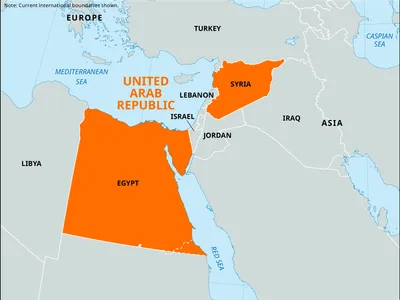

Independent Syrian Republic
Early Independence
- In April 1946, Syrian became independent and from 1946-1956 they had 20 different cabinets and 4 different constitutions.
- In the 1947 elections, Quwatli formed a government after the elections marred in fraud and Iraqi/Transjordanian influence
- In 1947, the 1930 constitution was amended and Syria joined the IMF, pegging the Syrian pound to the US dollar (remained pegged until 1961)
- The early republic was ethnically, religiously, and socially heterogeneous
- The Druze and Alawite regions formed close and compact communities and large Christian communities formed in cities alongside the majority Sunni population
- The overall population consisted of townspeople, peasants, and nomads with most wealth being concentrated in cities and most of the population living in poverty
- The wealthy Sunni landowning notables took power after the French left (since they led the revolt against the French) and aimed to form a government with power concentrated with the federal governemnt
1948 Arab Israeli War
- In May 1948, the Jews defeated the Arabs and created the state of Israel, humiliating the Syrian government
- Syria had invaded northern Israel but was driven back to the Golan Heights
- In July 1949, armistice lines were agreed upon and a UN DMZ was established between Israel and Syria
- After the war, many Syrian Jews faced persecution and fled Syria enmass
- The Syrian defeat in the 1948 war was one of the major reasons for the Zaim coup in March 1949
National Bloc Split
- In 1947, the National Bloc was dissolved and split into the National Party and the People's Party
- National Party: led by Quwatli and represented the Damascus notables who supported Saudi Arabia Pan-Arab rule
- People's Party: represented the intrests of the Aleppo notables and supported Iraq Pan-Arab rule
- Baath Party: in 1943, the highly centralized/authoritarian secular socialist Arab nationalist Baath Party, who want a single Arab socialist nation, was founded and began to grow in popularity among students and army officers (particularly among the Alawites and other minorities)
- The main opposition to the Baath officers were the radical Syrian Social Nationalist Party (SSNP), an authoritarian party who wanted a Pan-Syrian national state
1949 Coups (First Syrian Republic)
- By 1949, a middle class had formed in Syria that was opposed to the ruling government under Quwatli
- This opposition formed due to Quwatli's admin being more concerned with Pan-Arab goals over domestic issues
- In March 1949, Col. Husni al-Zaim overthrew the Quwatli government in a bloodless coup and also Syria's first coup (of many)
- There are allegations that the CIA suggested the coup to Zaim and advised him on how to go about it
- However, evidence suggests that Zaim was already planning the coup for over a year since March 1947
- In August 1949, Zaim was overthrown by SSNP officer Col. Sami al-Hinnawi after Zaim beytrayed Antoun Saadeh (founder and president of the SSNP)
- In December 1949, al-Hinnawi was overthrown by Col. Adib al-Shishakli in an attempt to prevent a union with Iraq
- The colonels rule were conservative but not expressely ideological, the policical ones where Pan-Arab Baath Socialists
Shishakli Administration (Second Syrian Republic)
- In 1950, a new consitiution was adopted, beginning the Second Syrian Republic
- In November 1951, Shishakli led another coup by ordering the arrest of the prime minister, Fawzi Salu
- Thus, Shishakli consolidated his dictatorship and undivided power over the Syrian army
- After he took full control, he suppresed most political parties
- Eventually he began to make political moves with land reform policies and refusing aid from the US
- In August 1952, he launched the Arab Liberation Movement party but gained little support
- In February 1954, with most politicians uniting against Shishakli, he was overthrown in another military coup led by Col. Faysal al-Atasi, who restored Parliament
Rise of Baath Party in the United Arab Republic
- After the 1954 coup, the SSNP lost all influence and was suppressed in the army, leaving the Baaths with no serious rival
- During the 1950s cotton production grew rapidly in northeast Syria and had a wide effect on many Syrian's lives
- After the 1954 coup, Pres Gamal Abdel Nasser rose to power in Egypt as head of the Pan-Arab movement, with Syria becoming a close ally with Egypt and the communist countries
- Following the Suez Crisis in 1956, Syria feared an Israeli invasion and signed a military pact with the Soviet Union, creating a Communist foothold
- After the USSR-Syrian pact, the socialist Baathist began to gain more influence in the Syrian government
- The signing of the pact led to the Syrian Crisis in 1957 between Syria/Soviets and the US/Turkey/Baghdad Pact
- The US feared Syria would become communist and Iraq/Lebanon/Jordan considered invading Syria with the west to topple the Syrian government
- Turkey finally deployed thousands of troops on their border in fear that Syria would attempt to retake Alexandretta
- The crisis was averted when Khrushchev threatened to launch missiles at Turkey if they attacked and the US said they would retaliate against the Soviets if they did so, then Turkey finally agreed to cease hostilities on the border due to US pressure and Khrushchev visited the Turkish embassy in Moscow
- The crisis was important because it was seen as a major failure of the Eisenhower Doctrine (said that US would intervene militarily for Middle East allies to fight "international communism")
- In February 1958, the Baath Party gave up independence to become the Northern Province until 1961 of the United Arab Republic (Egypt-Syria political union) with Nasser as president
- However, the Egyptians treated the Syrians as subordiantes and in December 1959, the Baathist resigned from the Syrian government
- In September 1961, a coup led by the Syrian army under Abd al-Karim al-Nahlawi made Syria independent again (Syrian Arab Republic) after Egypt led new orders to limit landholdings and nationalize financial institutions
United Arab Republic

Baathist Syria
- After the 1961 coup, the old class of notables returned to power after new parliament elections
- However, the Baathist remained strong within the army and therefore effectively head of the government
- The new parliament moved to undo the socialist measures under the Baathist union with Egypt such as land reform and large business nationalizaiton
- These reforms ultimately led to the Baathist supporters in the army staging a bloody coup in March 1963 and seizing power
Sources: [
1
,
2
,
3
,
4
,
5
,
6
,
7
,
8
,
8
]